Owner: The Midnight（乐队官方站）· license: reference-only
观察目标：synthwave hero 光源与暗部层次、日落渐变用法边界、字形气质、全页节奏
desktop fb990f5f…18606f0 · mobile 9ade1747…b442f83
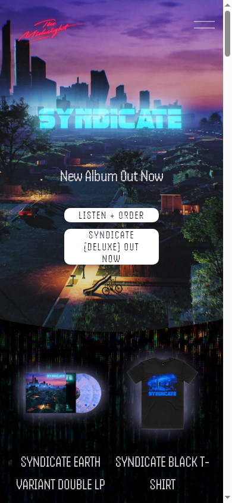
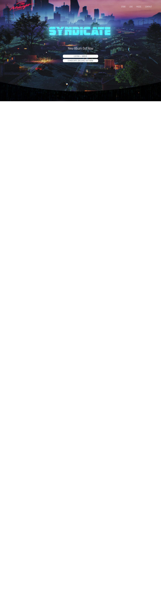

Owner: CD PROJEKT RED · license: reference-only · Cookiebot 已自动关闭
观察目标：高对比暗底、霓虹光源分配、磨损/噪点材质、显示字形、电影化构图
desktop 9172051e…7078780 · mobile 811de516…b4235ab
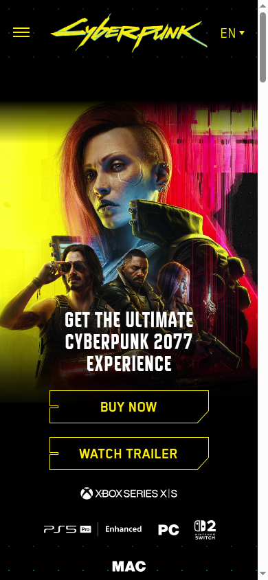
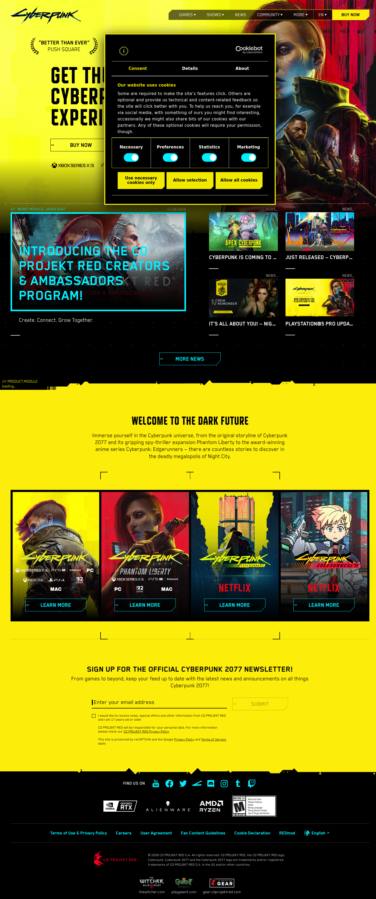

Owner: CD PROJEKT RED / TRIGGER · license: reference-only
观察目标：动画语汇×cyberpunk 融合、中文排印在暗底霓虹下的处理、版式张力
desktop 9ed130a5…04fb2dd · mobile d9ac3937…41cc490
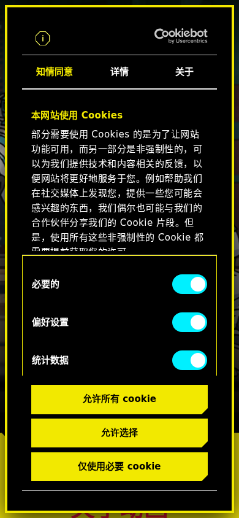
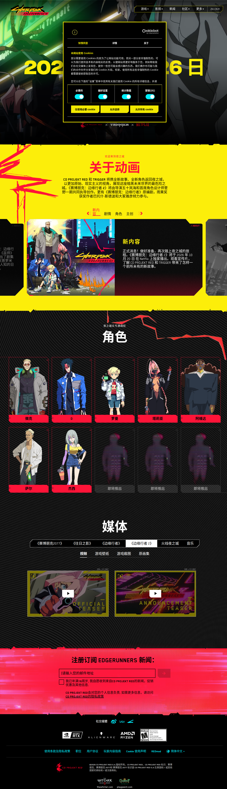

Owner: neondystopia.com 编辑部 · license: reference-only · 5 项证据中 3 项命中
观察目标：暗底编辑排版、霓虹点缀的克制用法、列表信息密度
desktop 8aa68b73…c69cc4e · mobile 704c1522…a0c6d6e


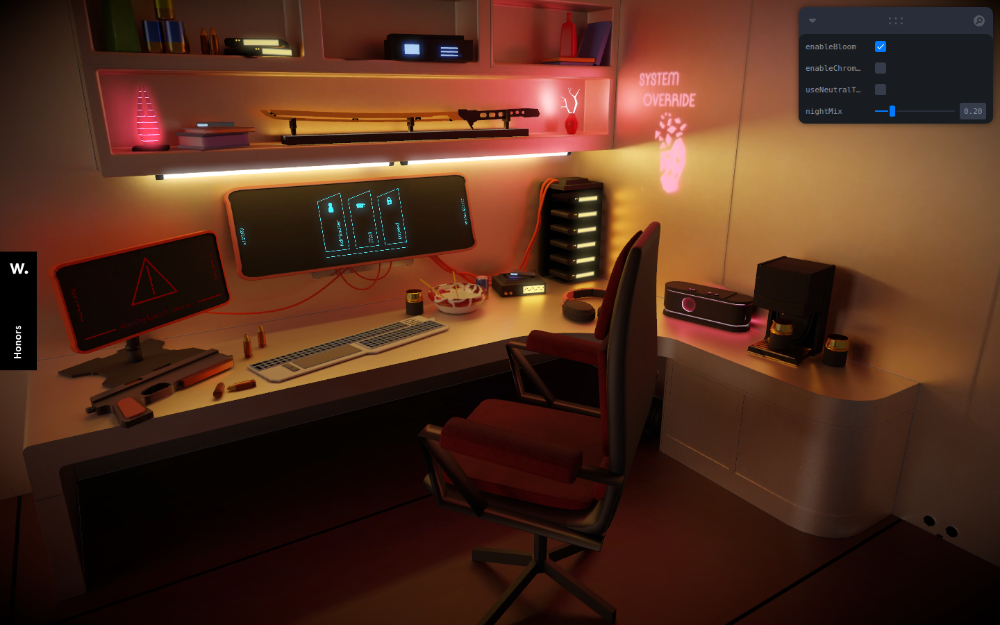
Owner: Introvigne Thibault · Awwwards 提名页 · license: reference-only
观察目标：3D 门户/加载态、霓虹粉青深底配色、像素/终端字形
desktop d411f4ca…9002f29 · mobile da72579d…8676caf
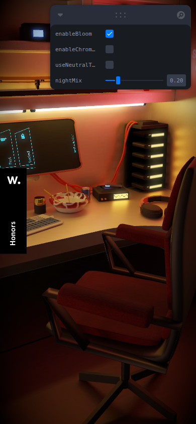

Owner: Swaraj Singh 等 · Awwwards 提名页 · license: reference-only
观察目标：单色 CRT 终端隐喻的界面化、控件态、复古 UI 可访问性边界
desktop 2a96a043…842fe05 · mobile e46c5070…94997b4
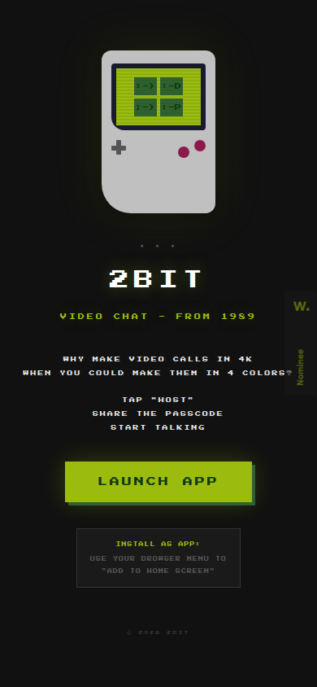

Owner: Rob FWA · Awwwards 提名页 · license: reference-only · full 截图 unavailable（滚动防护）
观察目标：终端排版密度与层级、raw 材质的信息可读性
desktop 0341c8b5…10fca8 · mobile 2c700251…671231e

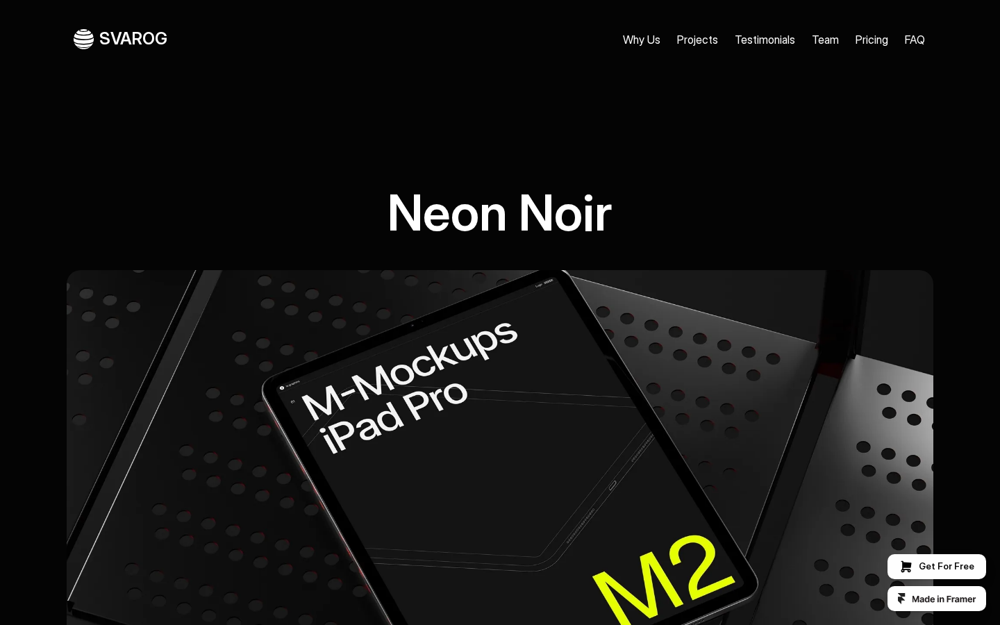
Owner: SVAROG studio · license: reference-only · 轮次 2 补充
观察目标：neon-noir 单强调色克制用法、黑底金属质感
desktop 2afba012…0119501 · mobile ca24c160…11d542
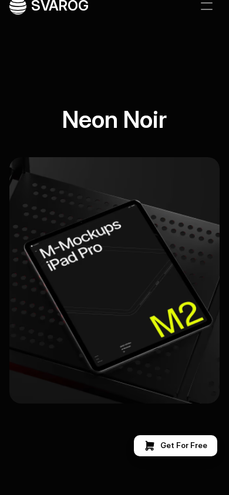

Owner: Jack McDade（OPL 评审页）· license: reference-only · synthwave 主导 + cyberpunk 底色同页共存
观察目标：融合先例——渐变只在 hero、内容区暗底等宽、霓虹重影只做标题
desktop a20d75a9…8c423 · mobile f992bbb1…ad451f
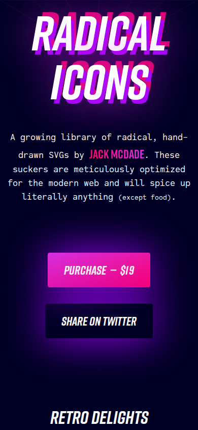